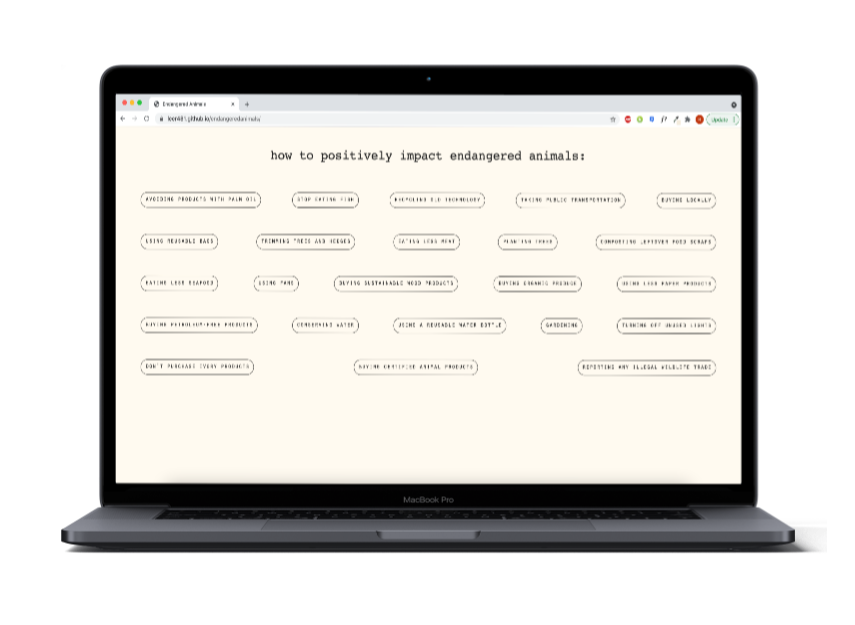
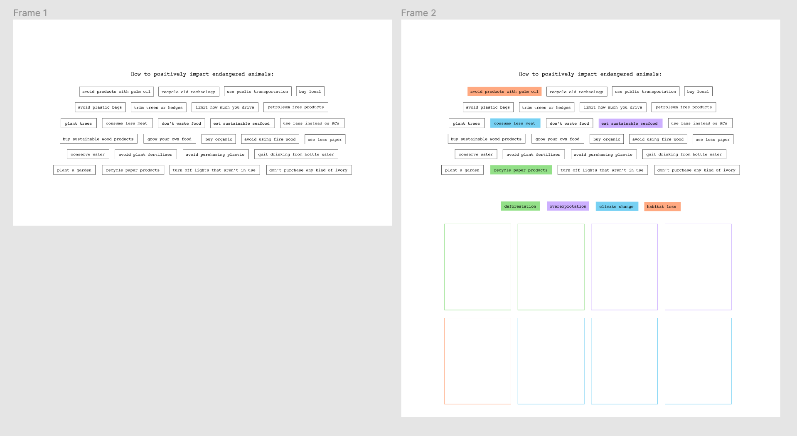
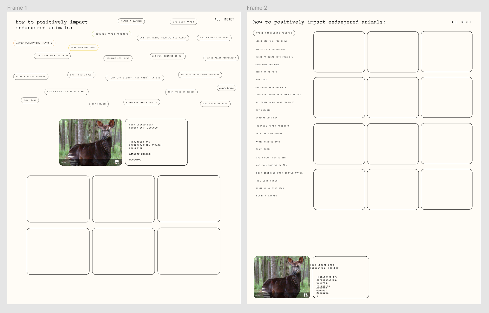

Project 3: Endangered Animals

Endangered Animals is an interactive data driven website to educate users on how different everyday actions can positively impact endangered animals in the world.
Goal:
The goal of this project was to use javascript to design a data driven website based on data from an Airtable.
Process:
The first part of this project was to design a collection of 100 items to be switched with another student in class.
From the Airtable database I received from my partner, I was interested in exploring the “threats” field. I wanted to design a website that would seem more positive and hopeful in comparison to the general negative despair linked with endangered animals.


I wanted users to interact with this website by choosing actions and seeing how each action affects different animals. Each action is a simple everyday choice or change users could make to positively impact the endangered animals. I designed each action as a button that users have to click, to represent the small changes that could positively impact the endangered animals.